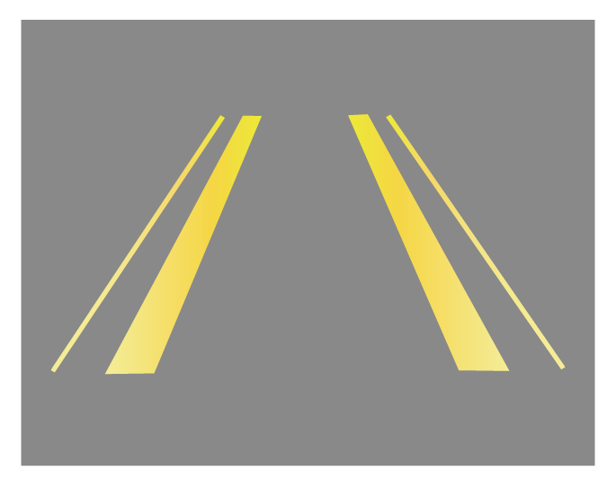

显示屏显示车轮轨迹及车身行驶轨迹线。
5.5.2 倒车后视系统*
倒车后视系统能够提供130°宽角度视频照射，可在音响系统显示屏上显示出大范围的车后视频影像，让驾驶员能够掌握车辆后方的各种复杂路况，提高倒车安全性。
开启和关闭倒车后视系统
整车电源在“ON”挡位，将换挡杆挂入“R”挡时，倒车后视系统自动进入工作，音响系统显示屏开始显示后方的拍摄画面，并在画面上显示出倒车动态轨迹线。
将换挡杆移出“R”挡，倒车后视系统自动退出工作，音响系统退出倒车画面显示。
动态轨迹线

后视摄像头

后视摄像头安装在牌照灯旁。
— 页面到底了 —